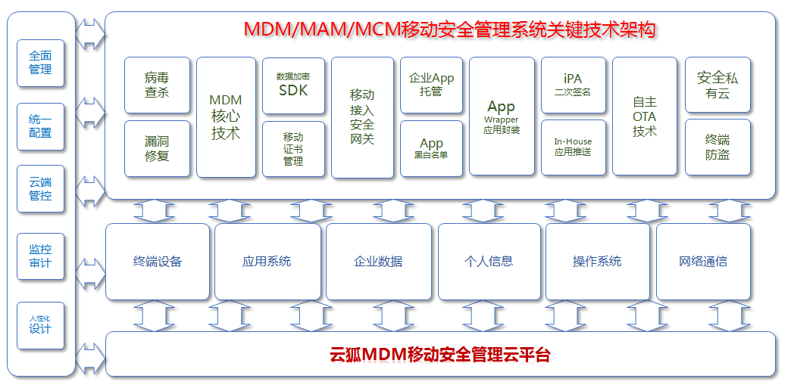
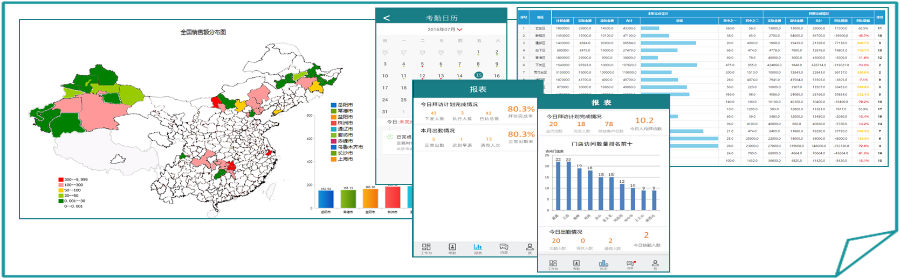
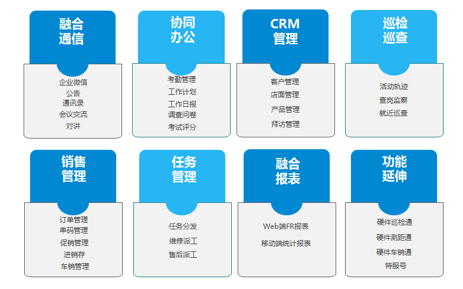

随着移动互联网的发展，智能硬件设备迭代，企业信息化从网络快速向移动应用延伸，对外勤人员及业务的管理成为企业重要的营销及运营手段；政务、军队、警察、事业单位为提高自身管理、提高服务于执法效率，各部门都在加快移动信息化发展。
中融VOFFICE软件基于LBS定位技术，实现企业对外勤人员定位及巡访轨迹的管理，同时上报有地理位置的相关信息。 除提供外勤人员管理，还可实现销售管理、售前售后派工、户外巡检等功能的SAAS服务，通过对运营业务大数据聚合分析，最终为企业管理者分析、决策、实施提供依据。
中融VOFFICE软件同时融合MDM平台技术，为军队、警务、政府及特殊企业部门提供移动终端、应用、内容等权限及安全的管理策略。
中融VOFFICE软件不仅是政企人员行为的管理，更是企业营销及运营平台，可与企业ERP系统对接，深入企业业务的管理平台；依靠物联网技术及融合通信手段，对其业务信息进行采集；通过基于大数据的商业智慧引擎在云平台上进行结构化运算及分析。
中融VOFFICE软件以企业各层管理者为“终级目标”，为企业解决基于大数据商业智能的跟进、分析、决策、管理的平台。提供融合报告及商业咨询，同时为企业提供智能预测及决策管理。各层管理者都可在WEB端及移动手持端实时查阅报表，对人员、业务及时决策及执行。
中融VOFFICE软件为客户快速开通，快速优化，需求明确到实际开通过程迅速，提出优化到系统变更效率高，平滑操作完成服务安装时间短。企业无需购置服务器及机架宽带等，同时提供7*24的专业运维维护及保障，真正实现零成本启动。
